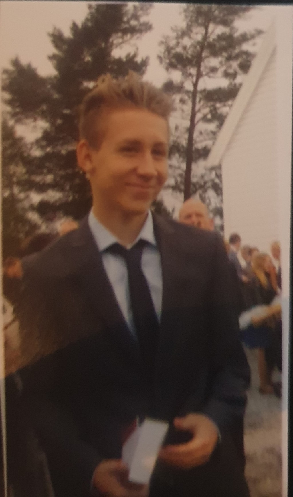

Jeg heter Jørgen Lygre og er 20 år.
Jeg kommer fra Askøy som er en øy utenfor Bergen.
Jeg har 3 år med videregående skole, 2 år med byggfag og 1 år med IKT service.
Mine planer er å få en god lærlingplass hvor jeg kan ta et fagbrev.

Hjemmeside
Interesser
PC oppbygging